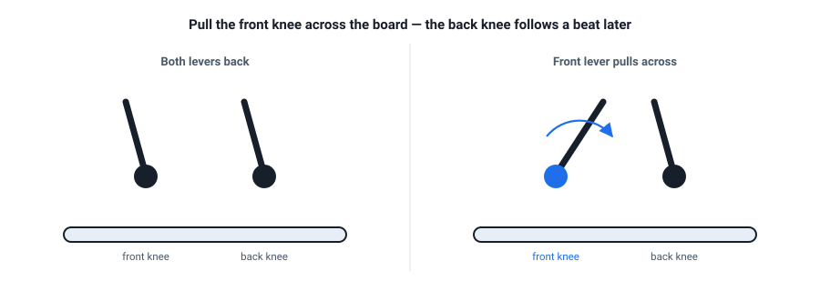

Rotation: Knee Steering
If edging is the grip and pressure is the push, rotation is the steering. And there is one movement here that separates riders who keep improving from riders who stall forever. This is that lesson.
Rotation is the steering dial
The AASI fundamentals name two rotation jobs: controlling the board's pivot (how it turns around its length) and its twist, or torsional flex — the board flexing like a ribbon so different parts of it sit on different edges at once (Performance Guide). Both come from your legs. Both are woefully under-used by beginners.
The trap: counter-rotation
Most beginners turn by swinging their upper body one way and the board the other — counter-rotation. It works at walking pace on a gentle slope, which is exactly why it gets adopted. Then it fails: the back foot skids out (the opposite of grip), and your body ends up twisted and weak over the board. Malcolm Moore ranks it dead last of all turn drills, because it "will completely hamper your progression" (Turn Exercises).
If you've been turning this way, don't feel bad — it's the default. Just know it's the habit worth breaking now, while it's cheap.
The fix: knee steering
Instead of swinging the board from the top down, you steer from the knees. Picture two levers rising out of your boots. To change edge, pull your front knee across over the board, and let your back knee follow a beat later:
- The front knee crosses → the front of the board flattens and rolls onto the new edge.
- Only then does the back knee follow → the back of the board comes over.
Because the two ends cross at slightly different times, the board twists (torsional flex) and you never sit on a fully flat base — which means you never lose grip and never give the uphill edge a chance to catch. This is the movement that turns "wishy-washy skid turns" into real control (Malcolm Moore, Knee Steering / Torsional Twist Explained).

Knees lead, but your hips must cross over the board too. Riders who move only their knees end up with their hips stuck behind the board — a weak position. Think "front knee and front hip over the board, then back knee and hip follow".
Why it matters for your trip
Knee steering is what lets you make quick, controlled edge changes — the difference between skidding tentatively and riding with intent. It is the technique that, once it clicks, makes everything after it possible. It's worth the awkward first attempts.
- The narrow corridor. Start in a heel-side sideslip. Now steer the board from toes to heels and back to toes, keeping it inside an imaginary narrow lane about one board-length wide, staying on the fall line. This forces the small, isolated knee movement.
- Front lever only. From that sideslip, deliberately release only the front knee and hold the back leg in place. Feel the front of the board flatten and roll. Then let the back knee follow.
- Add the traverse. Once the corridor drill is smooth, ride a gentle traverse and use knee steering to change edges. Speed up the timing: front, back, front, back.
- Self-check. If your back foot keeps skidding out, you're still counter-rotating. Slow down and lead with the front knee.
Check your understanding
1. Knee steering starts with which knee?
The front knee crosses over first, flattening and rolling the front of the board; the back knee follows a beat later. The stagger is what keeps grip throughout.
2. Counter-rotation makes the back end of the board…
Twisting the upper body the opposite way to the board makes the tail skid — skidding being the opposite of gripping. It's the signature failure of counter-rotation.
3. Torsional twist means the board twists like a…
The board flexes through the middle "like a ribbon", so the front and back ends can sit on different edges at the same moment. That's what lets you change edge gradually and keep grip.
4. The movement that replaces counter-rotation is called…
Knee steering: front knee across, back knee following. Same effect as counter-rotation only at slow speed, but it keeps working as you go faster and steeper.
Watch it, don't just read it
- Knee Steering // Torsional Twist Explained Malcolm Moore · the definitive explanation of this movement. If you watch one video from this course, make it this one.
- Snowboard Turn Exercises, Ranked Worst to Best Malcolm Moore · the narrow-corridor and lever drills, plus exactly why counter-rotation fails.
- Snowboard Pro Camp Ex-Whistler instructor · another take on rotation if the lever analogy doesn't land.
Watch Malcolm Moore's Knee Steering // Torsional Twist Explained end to end. It is the single highest-value resource in this course: one certified instructor, one movement, four different explanations.
Your teacher is right here
Counter-rotation is sneaky — it can feel right for a while. If you're not sure whether you're doing it, describe your last run and I'll help you tell. Also ask me for more analogies for knee steering; there are at least four.
Snowboarding Fundamentals · lessons/0005-rotation-knee-steering.html